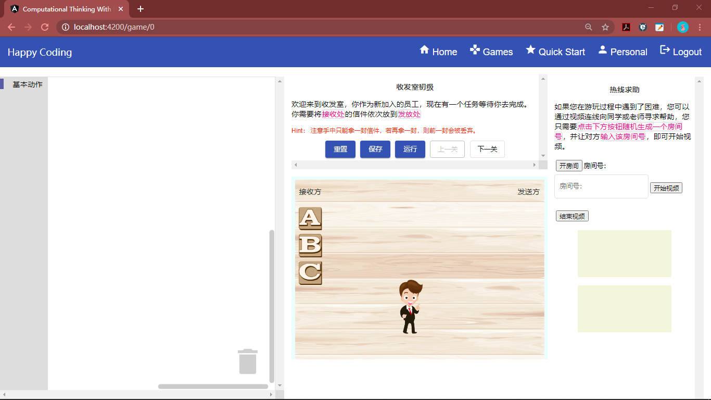
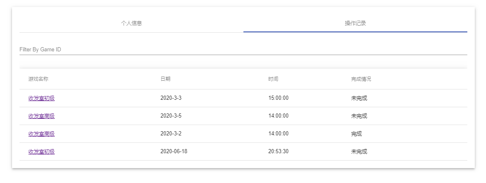

1. 注册登陆之后只需要点击主页的"开始游玩"按钮即可开始轻松快乐的计算思维训练了。
2. 在此处您可以任意选择一个游戏来开始游玩。
3. 在游玩界面，左侧是画布，在画布内，您可以通过拖动积木来实现代码的拼接，如果觉得不需要某块积木， 可以拖动到垃圾箱中以清除，若之后又觉得不该丢弃，还可以捡回来哦，划重点！ 中间上方是游戏场景的背景描述以及 hints，中间下方是游戏场景。右侧则是提供给您进行视频聊天求助的界面。 点击运行之后，系统会向您展示游戏过程，方便您发现问题。
在此处，您可以点击开房间来开设一个聊天室，您会获得您聊天室的房间号，把房间号告诉您的朋友或老师，他们便可以进入视频聊天室。
您需要知道别人的房间号，在此处输入房间号后点击进房间，再点击开始视频即可加入视频聊天。
若房间内已有两人，您不得进入该房间。开始视频需要一点时间，请您耐心等待。
在此处，您可以查看您的个人信息。
在此处，您可以看到您最近的游玩记录，也可以选择查看当前的游玩历史。
